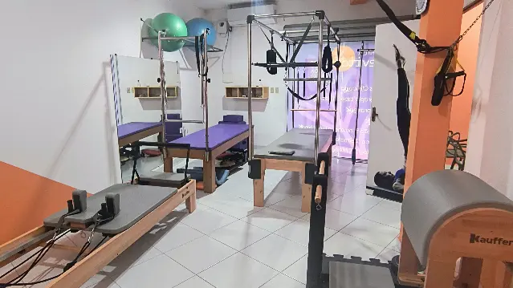
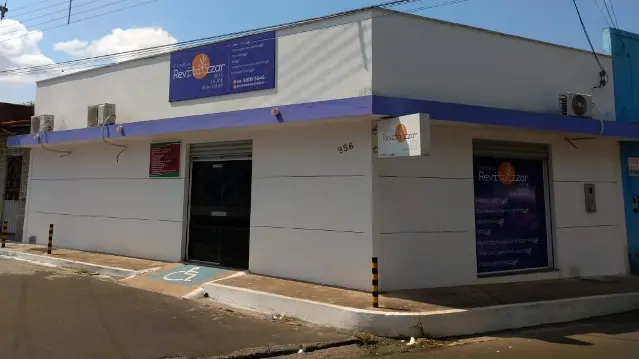

Fisioterapia
integrativa
Converse com nossos fisioterapeutas sobre suas necessidades e saiba como agendar seu atendimento.
Quero saber sobre fisioterapiaFisioterapia e Pilates em Caxias
Aqui, você encontra fisioterapia integrativa e Pilates terapêutico. Conheça nossos atendimentos e converse com a gente sobre o seu próximo passo.
Fale com a nossa equipeRua Teófilo Dias, 956
Centro, Caxias / MA

Quer começar um acompanhamento ou saber mais sobre os atendimentos? Nossa equipe está aqui para conversar com você.
Converse com nossos fisioterapeutas sobre suas necessidades e saiba como agendar seu atendimento.
Quero saber sobre fisioterapiaConheça nossa proposta de Pilates e consulte as possibilidades de acompanhamento e os horários disponíveis.
Quero conhecer o PilatesConheça quem está com você
Somos fisioterapeutas e estamos aqui para conversar sobre o seu atendimento. Conheça a Genna, a Fernanda, o Adonato e a Naiane na apresentação da nossa equipe.
Converse com a genteAcompanhe nosso Instagram
Venha nos conhecer
Fale com nossa equipe para consultar horários e informações sobre os atendimentos.
Fale com a gente pelo WhatsApp e informe se você procura fisioterapia integrativa ou Pilates terapêutico. Vamos apresentar as opções de atendimento e os horários disponíveis.
Sim. Use nosso WhatsApp para explicar o que procura e tirar dúvidas com a equipe sobre os nossos serviços.
Estamos na Rua Teófilo Dias, 956, no Centro de Caxias, Maranhão. Use o botão de rota para abrir o endereço no Google Maps.